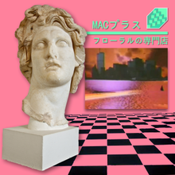
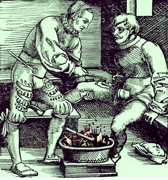
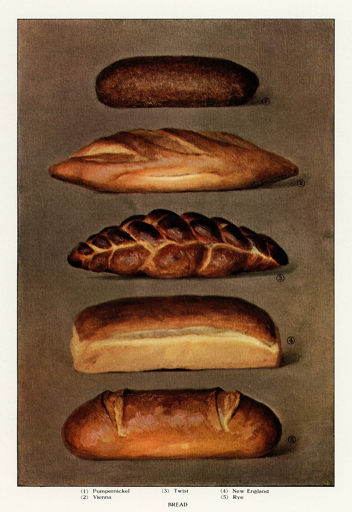
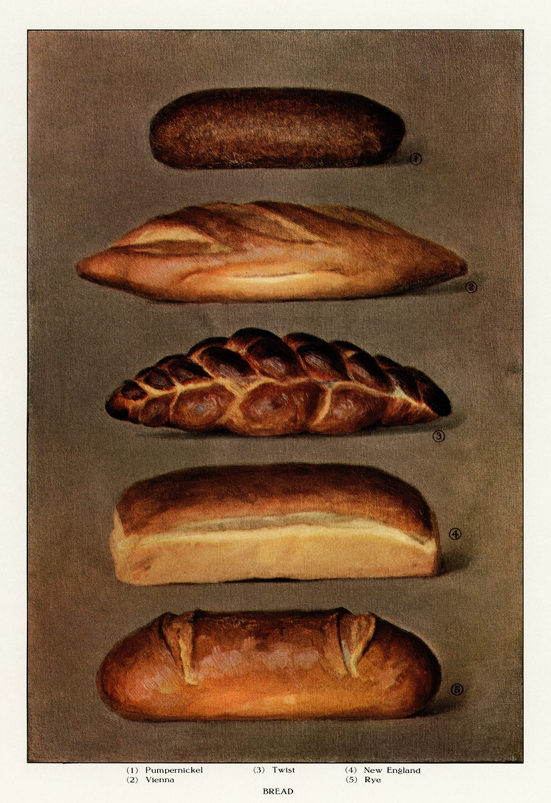
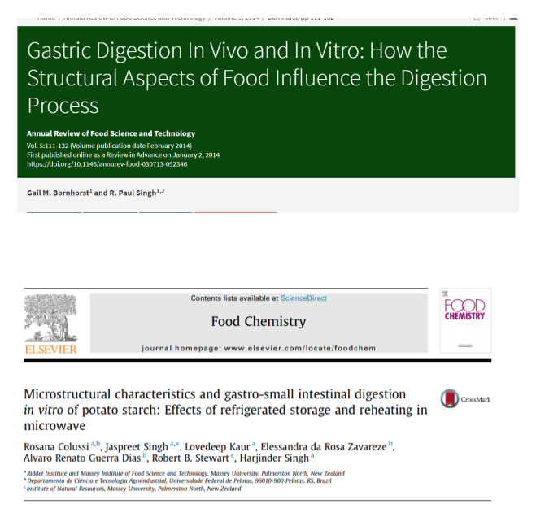
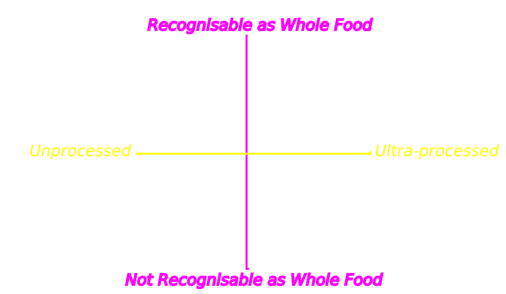
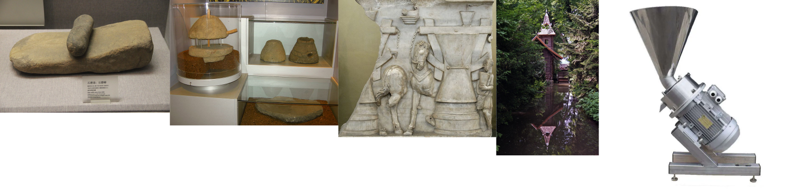

Degrees of Processing
Dr Shane V Crowley
Interacting with the Slides
üì∫Full screen: press the F key
üéÆView video controls: hover cursor over video
üë©‚Äçüé® Draw: click icon or press C
üåàPen colour: press X to cycle and Y to revert
üíÅ Options and Info: click icon or press M
Introduction
What is nutritionism?
What is ultraprocessing?
Should we care?
Food & nutrition is strongly contested:
A prominent critic we will encounter:Ways of understanding food
Knowing Food
Epistemology is the study of knowledge, how we know things and how we justify that we know things.
We think of molecules as the "building blocks" of food
. . . but do we know a "right way" to put those molecules together?

Is this "food"?
How about this?

Giving Explanations
Question: what is a statue?
Answer: a thing made of stone
Seeking Better Explanations
- What is it made of. . ?
- How is it made. . ?
- What is its structure. . ?
- Which purpose does it have. . ?
Food =
$$matter + process + form + function$$
Aristotle often used crafts (techne) as examples in his ontological works. When extended to 'natural' (biological) things his theory encounters problems. Biologists have largely abandoned the idea of an organism having a purpose (telos) but there is still some value in Aristotle's hylomorphism when applied to technology.
Is this unscientific?
Francis Bacon rejected the formal and final causes, urging
scientists to focus on matter and motion.
Epistemological structure of food science

Thinking narrowly
- Materialism: food is what it is made of ("matter in motion", "food is a set of nutrients")
- Functionalism food is what it does ("form follows function", "as long as it tastes good")
The Omnivore's Dilemma

The Omnivore's Dilemma

Problems with DoS
- Assumption: the world is made to serve us
- Scope: the theory has limited extension
- Easy-to-vary: DoS is highly subjective
DoS is better understood as a mnemonic than a theory
Effect of Bread Fortification on US Pellegra Deaths
Adapted from McClements, D.J., Vega, C., McBride, A. E., & Decker, E. A. (2011). In Defence of Food Science. Gastronomica, Summer, 76-84.Kinds of Knowledge
Much knowledge of food is procedural
Science generates declarative knowledge
A feature of this knowledge is its generalisability
Obstacles to Knowledge
Obstacles to Knowledge

Maillard Browning (MB)
 

Maillard Browning (MB)

Traditional Know-how
Mac Con Iomaire, M. and P. Gallagher (2009). The Potato in Irish Cuisine and Culture. Journal of Culinary Science & Technology.The Irish had a peculiar way of cooking potatoes ‘with and without the bone or the moon’ [...] par boiling the potato leaving the core undercooked [...] The partially cooked potato lay in the stomach creating a second digestion period [...]
Scientific Know-why
Anti-science Rhetoric

Appeals to "common sense" knowledge of food
Reduction as a Narrowing (not a minimising)
NATURECULTUREHEALTHSENSATIONSTRUCTUREMOLECULES
Processing: Natural or Cultural?
Article on "Ultra-Processed Foods" (inspired by NOVA)
Levi-Strauss' Triangle

Levi-Strauss' Triangle

Scientists are returning to this idea
Gastrophysics, Molecular Gastronomy and Modernist Cuisine or all "new disciplines" that essentially aim to make food science more culturally aware/relevant"[...]one long-debated dilemma of the culinary triangle can also be resolved: the ‘cooked’ is close to ‘rotten/fermented’, because long cooking times correspond always to a hydrolysis of proteins and carbohydrates, which define the structure of the foods[...]" - Vilgis
Resemblance to Nature
Famine seems to be the last,
the most dreadful
resource of nature
- Thomas Malthus
This is technology
... and this
... and this too üòï
Technology comes from the Greek techne, which means an art or skill applied to obtain a specific objective within a given context
üß∞
Evolution of Technology

Tech evolves and stays the same

The Cooking Hypothesis
The Cooking Hypothesis


Similarities and Differences
- Solar drying: food cut into small pieces and exposed to direct sunlight
- Spray drying: food sprayed into small droplets and exposed to hot dry air

Patent US3237A

Undated

usslave.blogspot.com
A series of vacuum pans, or partial vacuum pans, have been so combined together as to make use of the vapor of the evaporation of the juice in the first, to heat the juice in the second and the vapor from this to heat the juice in the third, which latter is in connection with a condenser, the degree of pressure in each successive one being less… The number of sirup-pans may be increased or decreased at pleasure so long as the last of the series is in conjunction with the condenser.
- Patent US3237A

Patent US3237A

Patent US3237A
Credit: GEA group
Advantages of the Evaporator
- Reduced manual labor and personal danger
- Decreased burning/discolouration of product
- Drastically lower energy consumption
Contribution to Nutrition

The most important factor now, when considering food, nutrition and public health, is not nutrients, nor foods, so much as what is done to foodstuffs and the nutrients originally contained in them, before they are purchased and consumed.
- Monteiro & Cannon: What are ultra-processed products.
Credit: Monteiro & Cannon: What Are Processed Foods?
I left the industry when I finally had to acknowledge that reform would never come from within. I could no longer accept a business model that put profits over public health - and no one else should have to, either.
- Michael Mudd (former executive for Kraft Foods)


- "The technologist has the duty to face, ponder over, and solve his/her own moral problems"
- "Unfortunately conscience, usually wakeful in private and professional matters, is rather sleepy when it comes to affecting the anonymous lives of others"
- "Inconsistently enough, he/she is not above accepting praise when successful"